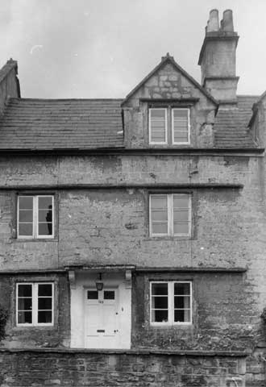

Type of building:
Mid mixed terrace
Listing:
Grade ll
Plan and elevation:
Single pile, two-unit. 2 1/2 storeys. Plus a two-storey rear extension.
Summary of the probable main building
history:
About 1660-1665. Extended about 1830-1840

South elevation
Exterior:
One of a pair with its neighbour (property ref. BE 011) although exterior subject
to less alteration. Constructed of coursed and squared locally quarried Bath stone.
Two wooden 2-light casement windows on the ground floor with chamfered and ogee
moulded dressed stone surrounds. The central stone mullions have been removed
and replaced with wood mullions. The first floor windows have been similarly modified.
A Cotswold type gable at the attic level still houses its original stone mullion.
The ground floor and first floor windows have continuous drip labelling over them.
There is a straight drip label over the attic window. The door opening is central
with chamfered dressed stone surrounds and with a flat stone hood over it supported
on scrolled moulded stone brackets. The roof is pitched and slated with an ashlar
chimney stack. The rear elevation retains its stone gable at attic level with
a two-light casement window, stone mullion and surrounds of ogee-chamfer section.
The extension has a ground floor window opening, formerly containing a sash, and
is covered by a cat-slide slated roof.
Interior:
Originally single pile, two-unit, cross entry plan. The principal entry used to
open direct into the main living room but is now screened by inserted tongue and
groove panelling. There is a large chimney breast, now fitted with a modern gas
fire, flanked by alcoves containing wood cupboards with panelled doors, beaded
jambs and some remaining iron `L' hinges secured by nails. A newel semi-circular
staircase is also situated in a fireplace alcove. The former rear entry with a
chamfered dressed stone surround now gives access to the extension via two steps
up. Another door to the left of the principal entry gives access to the second
room of the original property. This door is of three-plank tongue and groove construction
with four moulded braces. There are window seats in both main rooms and similar
window seats in the first floor rooms. Another first floor window, which looks
into the rear extension, was formerly an external window and retains its drip
label although the central stone mullion has been removed. Fireplaces at first
floor and attic levels now contain grates with tiled surrounds of circa 1920 but
stone surrounds of ogee section are still visible. The walls of the two attic
rooms are continued into the roof space; one room with a stone gable overlooking
the front, the other room with a stone gable overlooking the rear. Both gables
contain mullions. The attic level is constructed in the 17th Century Cotswold
extended collar style.
The rear extension (now consisting of kitchen, utility room and WC at ground floor level) is essentially one long functional chamber running the full length of the building and part of the length of its neighbour (property ref. BE 011). This contains at one end a large pantry/storage area with wood and pierced zinc screens and, at the other end, a stone fireplace (now sealed) with a heavy lintel and a wood and pierced zinc wall cupboard. The two areas are separated by a partition wall with a chamfered stone door surround and a now blocked internal window. The first floor room above is a storage-workshop area, too low to be intended for residential purposes.
Date & development:
The original building with its gables, internal arrangement and fixtures was constructed
in the second half of the 17th Century - on the documentary evidence of its neighbour
(BE 011) a date 1660-1665 is to be favoured. The extension, with its former sash,
appears to be 19th Century. It is built against (and thus later than) a similar
extension to BE 011, which is datable to about 1815-1835. But it is shown on the
1840 Tithe Map, so a date between 1830-1840 is indicated.
Ownership & occupation:
The early ownership/occupation history obscure but it was probably in common ownership
with its neighbour when built, who is likely to have been William Cannings the
Younger. Common ownership was probable in periods since. Thus both properties
were in the ownership of Sarah Scudamore at the time of the Tithe Commutation
Act survey for Batheaston (1840), the property being let to Wilkins Ellis. In
1857 the properties were in the joint ownership of James Gerrish. Nevertheless,
the property escaped the modernisation to which its neighbour was subjected in
the second half of the 18th Century, which presupposes separate ownership at that
time.
According to the present owner, the property at one time functioned as a bakery. The internal layout and fixtures and fittings of the extension bear this out; the shop entry was apparently to the rear of the property.
References:
- Batheaston Tithe Map and Apportionment Schedule 1840, Somerset Record Office.
Survey Drawings
| Ground
Plan |
Section |